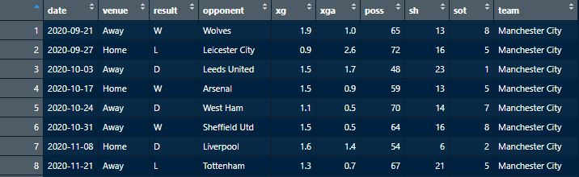

Naive Bayes
Analyses: Naive Bayes
Data preprocessing:

We are using the cleaned FIFA data that we obtained after cleaning the raw FIFA file from the last section. We will see how naive bayes classifies the data and if the accuracy is better.
We will also use the cleaned premier league season 2020-21 data and check if naive bayes performs better.
Coding:
Naive Bayes in Python
Naibe Bayes in R
Results:
Rules for support:
by plotting the boxplot for the finishing skill, we can see that it is a key skill for attackers.
The boxplot for the SlidingTackle shows that it is a key skill for defenders. In both the boxplots we can see that the midfielders boxplots whiskers span higher, this says that there are some midfielders who are specialists in attacking and defending.

This is the confusion matrix we obtained after running our naive bayes model on the dataset.
We got an accuracy of 77.12%
For the 2020-21 season data we can see that away team has won more times than the home team.
This barplot shows the results of all teams from the 38 matches they played. We can see that manchester city have had the highest number of wins and sheffield united have had the highest number of losses. This info can be usefull for model for predicting head to head matches.

This is the confusion matrix we obtained after running our model on the premier league data.
We got an accuracy of 64.37%
Conclusion:
We can see from the results that our model was able to predict the correct position of a player only 77% of times. This again proves our hypothesis that it is difficult for our model to classify some midfielders correctly. Their stats might be very similar to that of an attacker or defender thus making it difficult for the model to classify them accurately.
Looking at the premier league 2020-21 season, we have again got a low accuracy of 64%. This is given because of the nature of the game. But, we can also observe that the accuracy for naive bayes is significantly higher than what we got from decision trees, which was only 52%. Therefore Naive bayes performed much better on this data.